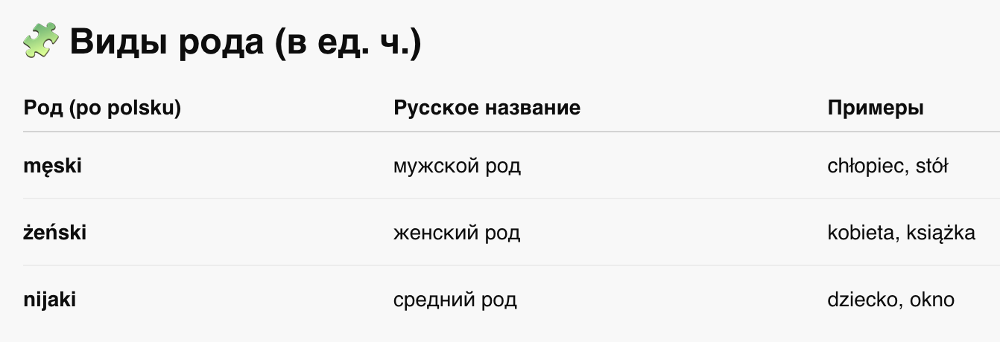
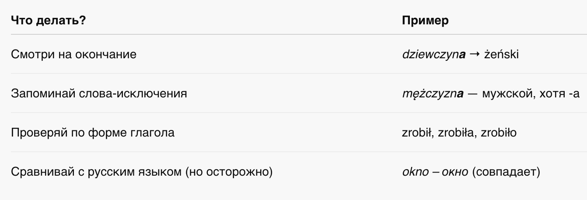

📘 Глава 3: Род в единственном числе
🧑🏫 Rodzaj w liczbie pojedynczej
1. Что такое род (rodzaj)?
2. Rodzaj męski — мужской род
3. Rodzaj żeński — женский род
4. Rodzaj nijaki — средний род
5. Советы по определению рода
📍Что такое род (rodzaj)?
В польском языке, как и в русском, каждое существительное в единственном числе имеет род.
Это важно, потому что:
- от рода зависят формы прилагательных, местоимений, числительных и глаголов в прошедшем времени;
- род надо "чувствовать", потому что многие формы выглядят похоже, но требуют разных окончаний.

🧑 2. Rodzaj męski — мужской род
Обозначает мужчин, мальчиков или неодушевлённые объекты, чаще всего оканчивается на согласную.
🔹 Примеры:
- mężczyzna – мужчина
- brat – брат
- stół – стол
- komputer – компьютер
- lekarz – врач
📌 Признаки:
- оканчивается на согласную: kot, dom, chłopiec
- глаголы в прошедшем времени → -ł: zrobił, był
👩 3. Rodzaj żeński — женский род
Обычно заканчивается на -a, обозначает женщин, девушек, понятия, иногда — предметы.
🔹 Примеры:
- kobieta – женщина
- dziewczyna – девушка
- szkoła – школа
- książka – книга
- miłość – любовь
📌 Признаки:
- окончание -a (почти всегда)
- глаголы в прош. времени → -ła: zrobiła, była
👶 4. Rodzaj nijaki — средний род
Обычно заканчивается на -o, -e, -ę, -um, обозначает:
- маленьких детей
- животных
- предметы
- абстрактные понятия
- dziecko – ребёнок
- okno – окно
- morze – море
- zwierzę – животное
🧠 5. Советы по определению рода
